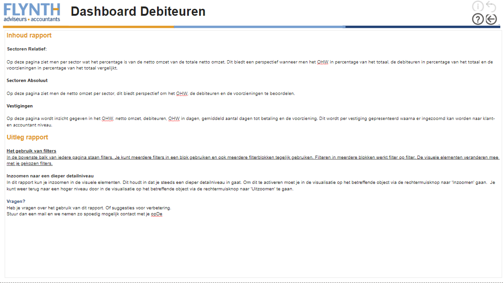

Na de eerste zes weken van de minor wordt er begonnen aan het project. Het betreft een project waarin de kennis van smart industry die in de eerste zes weken is opgedaan kan worden toegepast in de praktijk. Het bedrijf waar ik de opdracht heb gedaan is Flynth adviseurs & accountants. In onderstaande tekst wordt de opdracht verder beschreven en wordt stap voor stap de opdracht uitgewerkt richting het eindresultaat.
De opdracht die vanuit flynth werd voorgesteld tijdens de pitches in week 3 van de minor was het automatiseren van een proces aan de hand van robotic prosess automation of kortweg RPA. Bij deze opdracht hoort het onderzoek naar de geschiktheid van een proces en de toepasbaarheid van de softwarerobot in de organisatie. Echter begon COVID-19 ook in Nederland steeds meer invloed te hebben waardoor uiteindelijk een corona crisis is ontstaan. Deze coronacrisis heeft een grote impact op veel bedrijven en zo ook op de klanten van Flynth. Omdat Flynth de omzet haalt uit het betalen van facturen is het noodzakelijk voor het gezonde voortbestaan van het bedrijf dat deze facturen daadwerkelijk betaald worden. Om inzicht te krijgen in welke klanten de facturen wel of niet betalen dient een dashboard waarin debiteuren zichtbaar worden ontworpen te worden. Doordat het dashboard een hogere prioriteit heeft gekregen dan de automatisering door middel van RPA wordt onze opdracht omgezet in het maken van het dashboard. Hierbij bestaat de opdracht uit:
Het uitzoeken welke kengetallen er voor welke functies binnen Flynth interessant zijn om weer te geven
Het juist gebruik maken van de data die Flynth al in bezit heeft
Het ontwerpen van het dashboard op een manier die voor verschillende personen binnen Flynth overzichtelijk en intuïtief bruikbaar is.
Het dashboard wat we voor deze opdracht gaan ontwerpen wordt gemaakt in PowerBI. Dit is een tool van Microsoft die speciaal gemaakt is om data uit Excel of een SQL database weer te geven in de vorm van een dashboard. Binnen FLynth wordt er al gebruik gemaakt van een aantal dashboard op powerBI, echter is er nog geen dashboard wat direct inzicht geeft in de debiteurenstand van klanten van FLynth.
Om beter om te leren gaan met PowerBI hebben we van Auke de beschikking gekregen over een oefenset voor data, deze data bestaat uit een serie Excel bestanden met daarin data die uit de database van Flynth. Wanneer deze data in PowerBI wordt ingeladen moeten deze losse tabellen aan elkaar gekoppeld worden. Het koppelen van deze tabellen zorgt ervoor dat deze in het PowerBI model met elkaar kunnen communiceren en er data van verschillende databases in 1 model getoond kunnen worden.
Nadat we in voorgaand traject bekend zijn geworden met het presenteren van gegevens in PowerBI en de achterliggende dataconnecties die nodig zijn om het model de juiste gegevens te laten presenteren zijn we begonnen aan het dashboard voor Flynth. Hiervoor hebben we allereerst een meeting gepland met onze begeleider Auke Derksen om het datamodel van Flynth te bekijken. Binnen Flynth wordt er al meerdere jaren gewerkt aan een datamodel wat gebruikt kan worden om alle gewenste data door middel van PowerBI te presenteren. Omdat dit een zeer grote en complexe samenhang van SQL databases is mogen wij hier zelf niet in werken. Echter heeft Auke volledige toegang wat het mogelijk maakt om wijzigingen aan te vragen die Auke door kan voeren. Nadat er steeds meer duidelijk werd over het einddoel van het dashboard, waar ook de interviews een grote rol in hebben gespeeld. De interviews zijn gehouden met de eindgebruikers van het dashboard. In dit project zullen de hoofdgebruikers van het eindproduct voornamelijk vestigingsmanagers, regiomanagers en medewerkers van de afdeling finance zijn. Hierom hebben we een aantal interviews kunnen regelen met 2 vestigingsmanagers uit 2 verschillende delen van Nederland en een interview met een medewerker van finance. In onderstaande tekst wordt per interview kort weergegeven wat er tijdens het interview besproken is en wat de conclusie is die hieruit getrokken wordt. Om de anonimiteit van de medewerkers te bewaren worden deze aangeduid als persoon X, Y en Z.
Persoon X, vestigingsmanager van een vestiging in Noord-Holland
Op dit moment wordt het debiteurenoverzicht voor de vestiging van persoon X maandelijks geregeld door de interne administratie. Hierin worden waarden die gegenereerd worden vergeleken met de waarden 1 jaar terug zodat er gekeken kan worden hoe de relatieve groei is.
Persoon X geeft aan dat er binnen zijn vestiging weinig wordt gestuurd op onderhanden werk, dit is vaak niet nodig omdat er gewerkt wordt met voorschotten. Er wordt dus door de klant betaald voor er werk wordt verricht. Dit resulteert in een negatieve onderhanden werk stand.
Persoon X geeft aan dat de data op een overzichtelijke wijze gepresenteerd moet worden waarin de te hoge waarden direct uitspringen. Hij geeft aan graag diagrammen te zien in plaats van tabellen. Ook geeft hij aan dat er niet te veel data in 1 model gepresenteerd moet worden om het overzicht te bewaren.
Persoon Y, vestigingsmanager van een vestiging in Gelderland
Op dit moment gebruikt persoon Y zelfstandig PowerBI om meer inzicht te krijgen in welke accountmanagers klanten hebben met een betalingsachterstand. Hiermee heeft hij zelf al een sneller proces opgezet dan met het gebruik van Excel.
Persoon Y geeft aan graag alles in 1 overzicht te kunnen zien zodat hij in 1 oogopslag kan zien waar de hoogste value at risk ligt. Zelf presenteert hij zijn eigen model in tabelvorm en zou dit graag van ons dashboard ook zo zien.
Persoon Y heeft als doel om het dashboard te gebruiken om het sturen van medewerkers preciezer en efficiënter te maken wat resulteert in een hogere kwaliteit van de uren die gemaakt worden.
Persoon Z, Finance controller
Binnen de afdeling finance houdt persoon Z de begrotingen van de vestigingen maandelijks bij en worden er rapportages gemaakt over de omzet, het onderhanden werk en de debiteurenstand van de vestigingen. Het doel is om richting een analyse te gaan werken die de rapportages kan vervangen.
Voor persoon Z zou het dashboard helpen om makkelijker inzicht te krijgen in boven genoemde getallen. Dit bespaart een hoop tijd en maakt het ophalen van de data makkelijker en overzichtelijker.
Persoon Z geeft aan graag een dashboard te willen zien waarin de debiteuren, het onderhanden werk en de ouderdomscategorie te zien is. Bij al deze waarden ook de mogelijkheid om te kijken welke vestigingen en klanter hieraan gekoppeld zijn. Ook wordt gevraagd of het onderhanden werk en de debiteurenstand als percentage van de omzet weergegeven kan worden om zo in een oogopslag te kunnen zien bij welke vestigingen dit hoger is dan gewenst.
De resultaten van de interviews zijn zo goed mogelijk meegenomen in het ontwerpen van het dashboard. Ondanks dat de 3 geïnterviewde partijen allemaal het dashboard op een andere manier gepresenteerd willen zien zijn ze het eens over de kengetallen die in het dashboard gepresenteerd moeten worden. Nadat duidelijk is geworden welke kengetallen er gepresenteerd moeten worden kunnen deze aan het dashboard worden toegevoegd. De belangrijkste te presenteren kengetallen zijn als volgt:
Debiteuren: De debiteurenstand geeft aan hoe hoog het totaal van de onbetaalde facturen is. Dit is een kengetal wat eenvoudig inzicht geeft in de hoeveelheid betalingsachterstand een klant nog heeft.
OHW: Het OHW of onderhanden werk is een bedrag wat bestaat uit uren die al wel gemaakt zijn maar nog niet gefactureerd zijn vermenigvuldigt met het uurtarief van de medewerker. Het OHW is dus een bedrag wat nog gefactureerd gaat worden.
Netto Omzet: De netto omzet is de omzet die gemaakt is minus de afboekingen. Dit is een kengetal wat voornamelijk gebruikt wordt om de debiteuren en het OHW in perspectief te brengen.
Voorziening: De voorziening is een bedrag waar al vanuit wordt gegaan dat het niet meer wordt betaald. Dit gaat bijvoorbeeld om onbetaalde facturen van meerdere jaren geleden of van failliete klanten.
Hoe deze waarden uiteindelijk gepresenteerd zijn wordt bij het eindresultaat omschreven
Tijdens de periode waarin de opdracht is uitgevoerd is de communicatie met de opdrachtgever essentieel. Deze communicatie is gebruikt om te achterhalen wat er precies getoond moet worden in het eindresultaat en om de begeleiding die we hiervoor nodig hebben te krijgen. Voor zowel begeleiding als het uitzoeken wat er gewenst is in het eindresultaat hebben we als groep met de begeleiders elke week een online meeting gehouden. In deze meetings werd wekelijks gekeken naar de voortgang van de opdracht en hebben wij als groep de mogelijkheid om eventuele vragen te stellen. Wanneer de wekelijkse meeting niet genoeg was om verder te kunnen werd op een later tijdstip nog een meeting gepland waar er meer uitleg gegevens wordt over bijvoorbeeld PowerBI.
Het resultaat van het project is een dashboard bestaande uit 4 pagina's. In onderstaande tekst wordt per pagina kort uitgelegd wat er gepresenteerd wordt en hoe deze pagina gebruikt kan worden door de eindgebruiker. De pagina's zijn als volgt:
Intro De intro pagina is de eerste pagina van het dashboard. Op deze pagina wordt een inhoudsopgave gegeven en wordt er per pagina kort uitgelegd wat er gepresenteerd gaat worden, dit is gedaan zodat de eindgebruiker snel de pagina waar hij/zij naar op zoek is kan vinden. Verder wordt er een uitleg gegeven over hoe het dashboard gebruikt moet worden, hierin zijn een aantal tips en tricks gegeven om het maximale uit het dashboard te kunnen halen. 
Sectoren Relatief Op de pagina Sectoren Relatief worden de kengetallen die door de vestigingsmanagers en medewerker van finance als nodig werder beschouwd weergegeven. Deze kengetallen zijn de netto omzet, aantal cliënten, onderhanden werk, debiteuren en de voorziening. Al deze kengetallen worden op deze pagina gepresenteerd als percentage van het totaal. De hoge waarden krijgen een donkere achtergrond, de lage waarden een lichte achtergrond. Zo wordt in 1 oogopslag zichtbaar gemaakt welke sectoren extra aandacht verdienen omtrent eerder genoemde kengetallen. Wanneer er een specifieke sector uitspringt kan op deze sector ingezoomd worden. Door in te zoomen worden de kengetallen per vestiging binnen deze sector getoond. Zo kan er ook per vestiging gekeken worden welke sectoren moeite hebben met betalingen in de COVID-19 crisis. Binnen de vestiging kan nog op klantniveau gekeken worden om zo direct op de klant te kunnen sturen. Verder is er rechtsboven in het scherm nog een filter toegevoegd waarmee op factuurjaar gefilterd kan worden zodat er nog preciezer gekeken kan worden naar de betalingsachterstand. Op bovenstaande afbeelding zijn de kengetallen op sector niveau te zien. De sectoren zijn vervangen door getallen en absolute waarden zijn onzichtbaar gemaakt omdat er voor Flynth adviseurs & accountants gevoelige informatie gepresenteerd wordt. Op bovenstaande afbeelding worden de kengetallen op vestigingsniveau gepresenteerd. De vestigingen zijn vervangen door letters en absolute waarden zijn onzichtbaar gemaakt omdat er voor Flynth adviseurs & accountants gevoelige informatie gepresenteerd wordt.
Sectoren Absoluut Op deze pagina worden dezelfde kengetallen gepresenteerd als op de pagina sectoren relatief, het grote verschil zit in de manier waarop de data gepresenteerd wordt. Op de pagina sectoren relatief wordt de data als percentage van het eindtotaal gepresenteerd om zo snel inzicht te krijgen in de status van een sector/vestiging/klant ten opzichte van een andere sector/vestiging/klant, op de pagina sectoren absoluut worden de echte bedragen en getallen gegeven die bij de sectoren/vestigingen/klanten horen. Deze pagina zal meer gebruikt worden om direct te kunnen sturen op de klanten met een hoog openstaand bedrag en daarmee een hoge value at risk. Door inzicht te krijgen in de value at risk kan het verlies door grote onbetaalde facturen worden geminimaliseerd wat uiteindelijk resulteert in een hogere omzet. Ook op deze pagina krijgen de hogere bedragen een donkere achtergrond en de lagere bedragen een lichte achtergrond. Op deze pagina kan net als op voorgaande pagina van sector niveau worden ingezoomd naar vestiging- of klantniveau worden ingezoomd. Op bovenstaande afbeelding worden de kengetallen op vestigingsniveau gepresenteerd. De sectoren zijn vervangen door getallen en absolute waarden zijn onzichtbaar gemaakt omdat er voor Flynth adviseurs & accountants gevoelige informatie gepresenteerd wordt. Op bovenstaande afbeelding worden de kengetallen op vestigingsniveau gepresenteerd. De vestigingen zijn vervangen door letters en absolute waarden zijn onzichtbaar gemaakt omdat er voor Flynth adviseurs & accountants gevoelige informatie gepresenteerd wordt. Op bovenstaande afbeelding worden de kengetallen op klantniveau gepresenteerd. De klantnamen en absolute waarden zijn onzichtbaar gemaakt omdat er voor Flynth adviseurs & accountants gevoelige informatie gepresenteerd wordt.
Vestigingen De pagina Vestigingen is gericht op het sturen van accountmanagers en hun klanten. Op de pagina Vestigingen wordt het OHW, de debiteuren, de netto omzet, het OHW in dagen, het gemiddeld aantal dagen tot betaling en de voorziening gepresenteerd. Hiernaast zijn er nog twee nieuwe kolommen toegevoegd die binnen Flynth adviseurs & accountants nog niet gebruikt werden, dit zijn de kolommen waarin het OHW en de debiteuren als percentage van de gefactureerde omzet weergegeven wordt. Deze kolommen geven inzicht in de grootte van het OHW of de debiteuren ten opzichte van de omzet om zo beter inzicht te krijgen in de gevolgen van een hoge OHW- of debiteurenstand. In de tabel zijn een aantal vlakken donkerblauw gekleurd, de vlakken van de debiteuren kleuren donkerblauw wanneer de debiteuren meer dan 8% van de gefactureerde omzet is. Voor het OHW geldt dat deze donkerblauw kleuren als het OHW hoger is dan 50% van de gefactureerde omzet. De percentages van 8% en 50% zijn besproken in een interview met finance, echter kunnen deze altijd nog bijgeschaafd of versoepeld worden als blijkt dat er te veel of te weinig ruimte voor speling is. Onder de tabel is een staafdiagram te zien waarin de debiteuren en het OHW per ouderdomscategorie worden uitgezet. De ouderdomscategorie is een waarde die aangeeft hoe oud het werk wat resulteert in onderhanden werk of hoe oud de onbetaalde factuur is. Deze staafdiagram is toegevoegd om inzicht te krijgen in de ouderdomscategorie, dit kan belangrijk zijn voor bepaalde klanten waarmee afspraken zijn over de betalingstermijn. In deze staafdiagram wordt direct zichtbaar hoe oud de facturen nog zijn. Ook op deze pagina is rechtsboven een filter toegevoegd om op factuurjaar te kunnen filteren. Verder kan er van vestiginsniveau worden ingezoomd naar klantniveau en naar accountmanagerniveau. In onderstaande afbeeldingen wordt per afbeelding een niveau verder ingezoomd. Op bovenstaande afbeelding worden de kengetallen op vestigingsniveau gepresenteerd. De vestigingen zijn vervangen door letters en absolute waarden zijn onzichtbaar gemaakt omdat er voor Flynth adviseurs & accountants gevoelige informatie gepresenteerd wordt. Op bovenstaande afbeelding worden de kengetallen op klantniveau gepresenteerd. De klantnamen en absolute waarden zijn onzichtbaar gemaakt omdat er voor Flynth adviseurs & accountants gevoelige informatie gepresenteerd wordt. Op bovenstaande afbeelding worden de kengetallen op accountmanagerniveau gepresenteerd. Hier wordt direct zichtbaar welkke accountmanager verantwoordelijk is voor de klant, dit heeft als doel om het voor een vestigingsmanager makkelijk te maken om een specifieke persoon aan te spreken over een specifieke klant waardoor er zeer gestuurd gewerkt kan worden. De namen van accountmanagers en absolute waarden zijn onzichtbaar gemaakt omdat er voor Flynth adviseurs & accountants gevoelige informatie gepresenteerd wordt.
Het eindresultaat zoals het op het seminar gepresenteerd is kan in onderstaande video bekeken worden.
In dit onderdeel worden de competenties die bereikt zijn bij het onderdeel Smart Project beschreven en onderbouwd. De competenties waar bij Smart Project aan gewerkt is zijn als volgt:
De student ontwikkelt een prototype van de oplossing (SP21) Het bewijs dat ik aan deze competentie heb voldaan is in het kopje 'Eindresultaat' te zien. Hier wordt het resultaat van het project, in dit geval een digitaal dashboard, gepresenteerd en onderbouwd waarom de keuzes gemaakt zijn.
De student draagt vanuit verschillende rollen bij aan het succes van het projectteam (SP51) Binnen onze projectgroep hebben we veel afgewisseld met de rollen van een projectteam, zo hebben we bij meerdere meetings vooraf afgesproken dat 2 studenten zich vooral op de achtergrond houden terwijl de 3e student de rol van voorzitter/interviewer op zich neemt. Dit heeft geresulteert in een goede rolverdeling waar ook direct zichtbaar was dat wij als projectgroep goed op elkaar ingespeeld waren door op het juiste moment in te haken op het gesprek wanneer dit bijvoorbeeld te technisch of te bedrijfskundig werd, zo hebben we elkaar ondersteund in onze rollen.
De student vertaalt een praktijkcasus naar een onderzoeksplan, voert deze uit en evalueert de kwaliteit van de uitvoering (SB61) Het bewijs hiervoor ligt in het proces wat we hebben doorlopen om bij een eindproduct te komen. In het begin van het project is er besproken welke mensen eindgebruikers zijn en hoe we deze mensen kunnen gebruiken om een goed resultaat neer te zetten. Hier zijn uiteindelijk de interviews uit gekomen wat heeft geresulteert in een kwalitatief goed dashboard wat achteraf nog met 1 van de geïnterviewden ter controle is doorlopen.
De student draagt actief bij aan een optimale werksfeer binnen en buiten zijn team (SP81) Binnen het team hebben we nooit problemen ondervonden met de samenwerking of rol-/taakverdeling. Dit is vooral zo gegaan omdat we allemaal met hetzelfde doel werkten, het maken van een goed dashboard waar Flynth adviseurs & accountants in de toekomst iets aan heeft. Zoals ik eerder al aangaf waren we goed op elkaar ingespeeld en voelden we aan wanneer er een groepsgenoot ondersteuning nodig had.
De student ontwikkelt een professioneel netwerk (SP82) Buiten dat ik veel nieuwe mensen heb leren kennen uit allerlei delen van Nederland en allerlei verschillende studie achtergronden heb ik met een deel van mijn klasgenoten en de begeleiders van het project vanuit Flynth adviseurs & accountants een LinkedIn connectie gemaakt zodat ik met deze mensen in contact kan blijven, ook na het afronden van de minor.
![]()

 Op bovenstaande afbeelding zijn de kengetallen op sector niveau te zien. De sectoren zijn vervangen door getallen en absolute waarden zijn onzichtbaar gemaakt omdat er voor Flynth adviseurs & accountants gevoelige informatie gepresenteerd wordt.
Op bovenstaande afbeelding zijn de kengetallen op sector niveau te zien. De sectoren zijn vervangen door getallen en absolute waarden zijn onzichtbaar gemaakt omdat er voor Flynth adviseurs & accountants gevoelige informatie gepresenteerd wordt. Op bovenstaande afbeelding worden de kengetallen op vestigingsniveau gepresenteerd. De vestigingen zijn vervangen door letters en absolute waarden zijn onzichtbaar gemaakt omdat er voor Flynth adviseurs & accountants gevoelige informatie gepresenteerd wordt.
Op bovenstaande afbeelding worden de kengetallen op vestigingsniveau gepresenteerd. De vestigingen zijn vervangen door letters en absolute waarden zijn onzichtbaar gemaakt omdat er voor Flynth adviseurs & accountants gevoelige informatie gepresenteerd wordt. Op bovenstaande afbeelding worden de kengetallen op vestigingsniveau gepresenteerd. De sectoren zijn vervangen door getallen en absolute waarden zijn onzichtbaar gemaakt omdat er voor Flynth adviseurs & accountants gevoelige informatie gepresenteerd wordt.
Op bovenstaande afbeelding worden de kengetallen op vestigingsniveau gepresenteerd. De sectoren zijn vervangen door getallen en absolute waarden zijn onzichtbaar gemaakt omdat er voor Flynth adviseurs & accountants gevoelige informatie gepresenteerd wordt. Op bovenstaande afbeelding worden de kengetallen op vestigingsniveau gepresenteerd. De vestigingen zijn vervangen door letters en absolute waarden zijn onzichtbaar gemaakt omdat er voor Flynth adviseurs & accountants gevoelige informatie gepresenteerd wordt.
Op bovenstaande afbeelding worden de kengetallen op vestigingsniveau gepresenteerd. De vestigingen zijn vervangen door letters en absolute waarden zijn onzichtbaar gemaakt omdat er voor Flynth adviseurs & accountants gevoelige informatie gepresenteerd wordt. Op bovenstaande afbeelding worden de kengetallen op klantniveau gepresenteerd. De klantnamen en absolute waarden zijn onzichtbaar gemaakt omdat er voor Flynth adviseurs & accountants gevoelige informatie gepresenteerd wordt.
Op bovenstaande afbeelding worden de kengetallen op klantniveau gepresenteerd. De klantnamen en absolute waarden zijn onzichtbaar gemaakt omdat er voor Flynth adviseurs & accountants gevoelige informatie gepresenteerd wordt. Op bovenstaande afbeelding worden de kengetallen op vestigingsniveau gepresenteerd. De vestigingen zijn vervangen door letters en absolute waarden zijn onzichtbaar gemaakt omdat er voor Flynth adviseurs & accountants gevoelige informatie gepresenteerd wordt.
Op bovenstaande afbeelding worden de kengetallen op vestigingsniveau gepresenteerd. De vestigingen zijn vervangen door letters en absolute waarden zijn onzichtbaar gemaakt omdat er voor Flynth adviseurs & accountants gevoelige informatie gepresenteerd wordt. Op bovenstaande afbeelding worden de kengetallen op klantniveau gepresenteerd. De klantnamen en absolute waarden zijn onzichtbaar gemaakt omdat er voor Flynth adviseurs & accountants gevoelige informatie gepresenteerd wordt.
Op bovenstaande afbeelding worden de kengetallen op klantniveau gepresenteerd. De klantnamen en absolute waarden zijn onzichtbaar gemaakt omdat er voor Flynth adviseurs & accountants gevoelige informatie gepresenteerd wordt. Op bovenstaande afbeelding worden de kengetallen op accountmanagerniveau gepresenteerd. Hier wordt direct zichtbaar welkke accountmanager verantwoordelijk is voor de klant, dit heeft als doel om het voor een vestigingsmanager makkelijk te maken om een specifieke persoon aan te spreken over een specifieke klant waardoor er zeer gestuurd gewerkt kan worden. De namen van accountmanagers en absolute waarden zijn onzichtbaar gemaakt omdat er voor Flynth adviseurs & accountants gevoelige informatie gepresenteerd wordt.
Op bovenstaande afbeelding worden de kengetallen op accountmanagerniveau gepresenteerd. Hier wordt direct zichtbaar welkke accountmanager verantwoordelijk is voor de klant, dit heeft als doel om het voor een vestigingsmanager makkelijk te maken om een specifieke persoon aan te spreken over een specifieke klant waardoor er zeer gestuurd gewerkt kan worden. De namen van accountmanagers en absolute waarden zijn onzichtbaar gemaakt omdat er voor Flynth adviseurs & accountants gevoelige informatie gepresenteerd wordt.